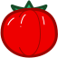

A · TDesign 선형
부드러운 외곽선 · 24px
357
모두 공개된 아이콘 세트의 원본입니다. 같은 크기와 농도로 비교해 보시고, 마음에 드는 알파벳을 알려주세요.
부드러운 외곽선 · 24px
꽃받침이 뚜렷한 외곽선 · 48px
원본 · Apache 2.0
B와 같은 형태의 채움형 · 48px
원본 · Apache 2.0
식물 실루엣을 강조한 채움형

이 페이지는 비교용입니다. 선택 전까지 퍼즐의 아이콘은 바뀌지 않습니다.